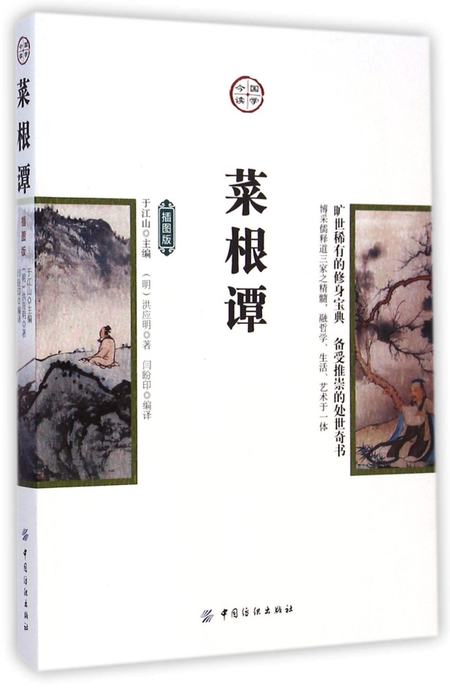

注：【】部分为笔者心得，非原文摘抄。
- 宁受一时之寂寞，毋取万古之凄凉。
- 言言悦耳、事事快心，便把此生埋在鸩毒中矣。
- 天地不可一日无和气，人心不可一日无喜神。
- 闲时要有吃紧的心思，忙处要有悠闲的趣味。
- 径路窄处，留一步与人行；滋味浓处，减三分让人尝。
- 交友须带三分侠气，为人要存一点素心。
- 宠利毋居人前，德业毋落人后；受享毋逾分外，修为毋减分中。
- 完名美节，不宜独任，分些与人，可以远害全身；辱行污名，不宜全推，引些归己，可以韬光养晦。
- 攻人之恶毋太严，要思其堪受；教人以善毋过高，当使其可从。
- 消杀得妄心尽，而后真心现。
- 与人不求感德，无怨便是德。
- 忧勤是美德，太苦则无以适性怡情；澹泊是高风，太枯则无以济人利物。
- 事穷势蹙之人，当原其初心；功成行满之士，要观其末路。
- 谢纷华而甘澹泊，遗个清白在乾坤。
- 降魔者先降自心，心伏则群魔退听；驭衡者先驭此气，气平则外横不侵。
- 教子弟如养闺女，最要严出入、谨交游。
- 修德而留意于事功名誉，必无实诣；读书而寄兴于吟咏风雅，定不深心。
- 福莫福于少事，祸莫祸于多心。
- 我有功于人不可念，而过则不可不念；人有恩于我不可忘，而怨则不可不忘。
- 利物者，计己之施，责人之报，虽百镒难成一文之功。
- 为恶而畏人知，恶中犹有善路；为善而急人知，善处即是恶根。
- 和气热心之人，其福亦厚，其泽亦长。
- 事来而心始现，事去而心随空。
- 贫家净扫地，贫女净梳头，景色虽不艳丽，气度自是风雅。
- 天薄我以福，吾厚吾德以迓之；天劳我以形，吾逸吾心以补之；天厄我以遇，吾亨吾道以通之。天且奈我何哉？
- 问祖宗之德泽，吾身所享者是，当念其积累之难。
- 君子而诈善，无异小人之肆恶。
- 如春风解冻、如和气消冰，才是家庭的型范。
- 淡泊之士，必为浓艳者所疑；检饬之人，多为放肆者所忌。
- 文章做到极处，无有他奇，只是恰好；人品做到极处，无有他异，只是本然。
- 爽口之味，皆烂肠腐骨之药，五分便无殃；快心之事，洗败身丧德之媒，五分便无悔。
- 不责人小过，不发人隐私，不念人旧恶！
- 天地有万古，此身不再得；人生只百年，此日最易过。幸生其间者，不可不知有生之乐，亦不可不怀虚生之忧。
- 怨因德彰，故使人德我，不若德怨之两忘；仇因恩立，故使人知恩，不若恩仇之俱泯。
- 小处不渗漏、暗处不欺隐、末路不怠荒，才是个真正英雄。
- 爱重反为仇。
- 居安宜操一心以虑患，处变当坚百忍以图成。
- 惊奇喜异者，无远大之识；苦节独行者，非恒久之操。
- 毋偏信而为奸所欺，毋自任而为气所使；毋以己之长而形人之短，毋因己之拙而忌人之能。
- 遇沉沉不语之士，且莫输心；见悻悻自好之人，应须防口。
- 觉人之诈，不形于言，受人之侮，不动于色。
- 害人之心不可有，防人之心不可无，此戒疏于虑也。宁受人之欺，勿逆人之诈，此警惕于察也。
- 毋因群疑而阻独见，毋任己意而废人言，毋私小惠而伤大体，毋借公论而快私情。
- 炎凉之态，富贵更甚于贫贱；妒忌之心，骨肉尤狠于外人。
- 锄奸杜幸，要放他一条去路。
- 当与人同过，不当与人同功，同功则相忌；可与人共患难，不可与人共安乐，安乐则相仇。
- 贫不能济物者，遇人痴迷处，出一言提醒之；遇人急难处，出一言解救之，亦是无量功德。
- 宜净拭冷眼，慎勿轻动刚肠。
- 德随量进，量由识长。
- 事业文章随身销毁，而精神万古如新；功名富贵逐世转移，而气节千载一日。
- 作人无点真恳念头，便成个花子，事事皆虚；涉世无段圆活机趣，便是个木人，处处有碍。
- 德者事业之基，未有基不固而栋宇坚久者。
- 信人者，人未必尽诚，己则独诚矣；疑人者，人未必皆诈，己则先诈矣。
- 遇故旧之交，意气要愈新；处隐微之事，心迹宜愈显；待衰朽之人，恩礼当愈隆。
- 能脱俗便是奇，作意尚奇者，不为奇而为异。
- 恩宜自淡而浓，先浓后淡者，人忘其惠；威宜自严而宽，先宽后严者，人怨其酷。
- 议事者身在事外，宜悉利害之情；任事者身居事中，当忘利害之虑。
- 不近恶事，亦不立善名，只浑然和气，才是居身之珍。
- 夸逞功业、炫耀文章，皆是靠外物做人。
- 居官有二语，曰：“唯公则生明，唯廉则生威。”居家有二语，曰：“唯恕则情平，唯俭则用足。”
- 处富贵之地，要知贫贱的痛痒；当少壮之时，须念衰老的辛酸。
- 休与小人仇雠，小人自有对头；休向君子谄媚，君子原无私惠。
- 磨砺当如百炼之金，急就者，非邃养；施为宜似千钧之弩，轻发者，无宏功。
- 宁为小人所忌毁，毋为小人所媚悦；宁为君子所责备，毋为君子所包容。
- 好利者逸出于道义之外，其害显而浅；好名者窜入于道义之中，其害隐而深。
- 谗夫毁士，如寸云蔽日，不久自明；媚子阿人，似隙风侵肤，不觉其损。
- 建功立业者，多虚圆之士；偾事失机者，必执拗之人。
- 日既暮而犹烟霞绚烂，岁将晚而更橙桔芳馨。故末路晚年，君子更宜精神百倍。
- 聪明不露、才华不逞，才有肩宏任巨的力量。
- 闻恶不可就恶，恐为谗夫泄怒；闻善不可急亲，恐引奸人进身。
- 用人不宜刻，刻则思效者去；交友不宜滥，滥则贡谀者来。
- 节义之人济以和衷，才不启忿争之路；功名之士承以谦德，方不开嫉妒之门。
- 事稍拂逆，便思不如我的人，则怨尤自消；心稍怠荒，便思胜似我的人，则精神自奋。
- 不可乘喜而轻诺，不可因醉而生嗔，不可乘快而多事，不可因倦而鲜终。
- 中才的人，多一番思虑知识，便多一番臆度猜疑，事事难与下手。
- 浓夭不及淡久，早秀不如晚成。
- 风恬浪静中，见人生之真境；味淡声稀处，识心体之本然。
- 猛兽易伏，人心难降；溪壑易填，人心难满。
- 宠辱不惊，闲看庭前花开花落；去留无意，漫随天外云卷云舒。
- 伏久者飞必高，开先者谢独早。
- 能休，尘境为真境；未了，僧家是俗家。
- 利欲炽然即是火坑，贪爱沉溺便为苦海。
- 雨余观山色，景象便觉新妍；夜静听钟声，音响尤为清越。
- 登高使人心旷，临流使人意远；读书于雨雪之夜，使人神清；舒啸于丘阜之巅，使人兴迈。
- 达人当顺逆一视，而欣戚两忘。
- 花看半开，酒饮微醉。
- 非分之福，无故之获，非造物之钓饵，即人世之机阱。
- 君子身虽在事中，心要超事外。